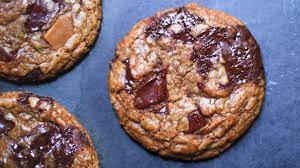

Brown Butter Chocolate Chip Cookie recipie

- Alvin Zhou's Brown Butter Toffee cookies are freaking delicious. You would literally sell your pet just to get another cookie. Thats right, they are equivelent to crack. Dont believe me? Try them. But, make sure to not cheap out on the ingridients or you won't get the proper experience.
Toffee ingridients
- 6 tablespoons unsalted butter
- 3/4 cup light brown sugar, lightly packed
- 1 teaspoon kosher salt
- 2 ice cubes
Cookie Dough
- 1 cup unsalted butter
- 3/4 cup white sugar
- 1 1/2 cups dark brown sugar, packed
- 2 teaspoons espresso powder
- 2 teaspoons kosher salt
- 1/2 teaspoon baking soda
- 2 large eggs
- 3 teaspoons vanilla extract , fancy stuff
- 2 1/2 cups all purpose flour
- 6 oz 60% cacao chocolate, fancy stuff
- flaky seal salt, for sprinkling
Make the Toffee:
- Line a baking sheet with parchment paper.(Pro Tip: oil the pan before putting the paper in for an easier time)
- In a medium nonstick saucepan over medium heat, melt the butter, brown sugar, and salt, stirring until evenly incorporated. If there are grainy lumps or if the fat starts to separate, add a couple splashes of water and stir vigorously to emulsify. Continue to cook, stirring constantly, until the mixture reaches 290°F (143°C), about 10-15 minutes.
- Pour the toffee onto the prepared baking sheet and spread out slightly with a spatula. Freeze until ready to use, about 30 minutes.
Make the Cookie Dough:
- Add the butter to a medium nonstick saucepan over medium-high heat. Cook, stirring occasionally, until the butter turns dark brown and smells nutty. Watch carefully so the butter does not burn. Remove the pot from the heat.
- Add an ice cube to the butter and slowly let it melt. It may froth and bubble. Add the remaining 3 ice cubes and gently stir until melted.
- In a large bowl, combine the granulated and brown sugar, espresso powder, salt, and baking soda
- Pour the brown butter into the sugar mixture and mix until combined. Do not worry if it looks separated.
- In a small bowl, whisk together the eggs and vanilla. Pour into the sugar and butter mixture and whisk until glossy and smooth.
- Add the flour and fold with a rubber spatula to incorporate until the dough has no visible flour streaks.
- Remove the toffee from the freezer (it should be a frozen disc) and break it into chunks that will fit inside a gallon zip-top bag. Double bag the toffee and seal both bags. With a rolling pin, break the toffee into small pieces.
- Fold the crushed toffee and chopped chocolate into the dough until evenly distributed.
- Using a large ice cream scoop or a ½ cup (65 g) measure, scoop the dough onto a parchment-lined baking sheet. Wrap the baking sheet in plastic wrap, but leave a small opening at the corner of the tray. Let the dough rest in the refrigerator for at least 36 hours. This will allow the flavor to develop and the dough to dry out a little as it rests, which will result in less spread when it bakes.
- When ready to bake, preheat the oven to 325°F (163°C). Line 2 baking sheet with parchment paper.
- Arrange the cookies on the baking sheets, leaving at least 2 inches (5 cm) of space between the cookies and away from the edges of the pan.
- Bake until the cookies are golden brown with crispy edges, but are still slightly soft in the center, 18-20 minutes.
- Immediately sprinkle the cookies with flaky sea salt. then let cool completely. The cookies will be very soft at first but will set after they are fully cooled.
- Enjoy!!
- Sell children for more...